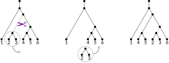

Phylogenetics methods: tree exploration
Erick Matsen
Subtree prune regraft

Typical cycle for a ML program
- Start with quick heuristic tree (e.g. parsimony, distance-based).
- Try all local tree modifications; optimize branch lengths for each.
- If we found something better, return to 2. Otherwise stop.
Tree traversal
See jupyter notebook